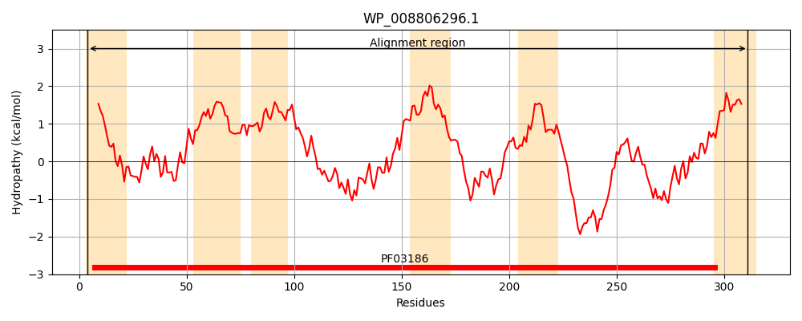
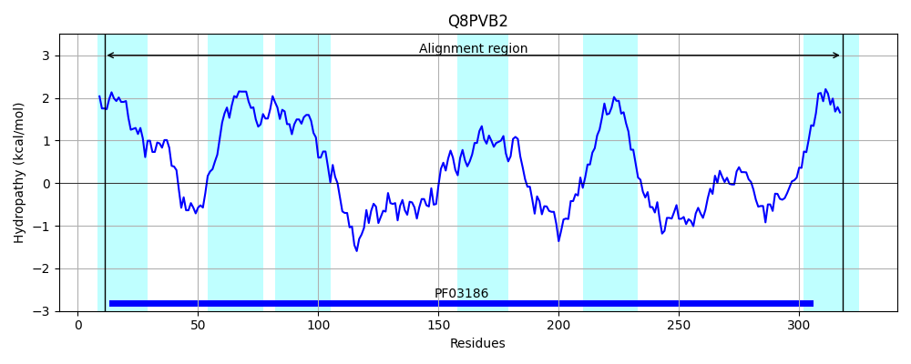
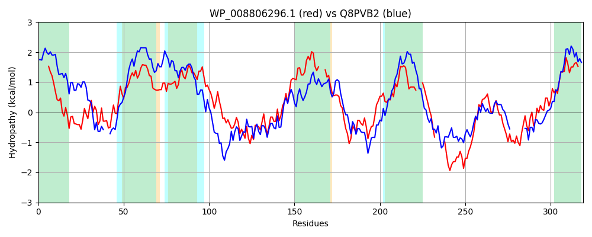

Hit Accession: Q8PVB2
Hit TCID: 9.B.125.2.2
Hit Description: gnl|BL_ORD_ID|16686 gnl|TC-DB|Q8PVB2|9.B.125.2.2 Probable cobalamin biosynthesis protein CobD OS=Methanosarcina mazei (strain ATCC BAA-159 / DSM 3647 / Goe1 / Go1 / JCM 11833 / OCM 88) GN=cobD PE=3 SV=1
Mach Len: 319
e:0.000000
Query TMS Count : 6
Hit TMS Count: 6
TMS-Overlap Score: 5.850000
Predicted Substrates:None
BLAST Alignment:
Score: 418 , Bit scores: 165 bits, E-value: 7.9e-49, Alignment length: 319, Percentage identity: 34
Query: 4 LAWCVAWILDVLIGDPPHWPHPVRWIGRLITVSQRVVRRVCHSDRALRIGGGVMWLVVTGLTWGVAWGALALAHGLHPWLGWLVEVWMIFTVLAGRCLAQSAMAVARPLQAGDLAESRHKLSWIVGRDTSQLQPAQINRAVVETVAENTVDGIIAPLFFLLLGGA---PLAMAYKAVNTLDSMVGYKHEKYRAIGMVSARLDDVANFLPARLSWLLLSLAAV---LCREDGAR-----ALRTGWRDRYQHSSPNCAWPEATVAGALGIRLGGPNDYFGQRVEKPWIGDAVRDIAVDDISRTIRLMWVASSLALALFIGV 311
L +A ++D++ G+PP HPV WIG+LI+ + + + R L ++ V+ G + +A G+ +L L+E + + A CL A + + L+ L + R L V R+TS+L Q++ AVVE+V+EN VDGI++P+F+ + G A A+KA++TLDSMVGYK E Y+ +G SA+ DDV N++PAR+S + + AA L + G + +++T +D + SPN +P A AGALG++L PN Y +G + + DI R +L+ +AS +L F+ V
Sbjct: 11 LVLLLAAVIDIVFGEPPAAVHPVVWIGKLISFLKNAAPK---NHRKLYGTAMALFCVLFASLLGYSVLYIAALPGIPGFLALLIEAYFLKATFAINCLLSPAREIYKHLEENRLEKVRELLPIYVSRNTSKLTKNQMSSAVVESVSENYVDGILSPIFYYAVFGEYGLVAAYAFKAISTLDSMVGYKTEPYKELGYFSAKSDDVLNWIPARISVIFILAAAFTVSLFPKKGRKINPFDSVKTALKDGMKTPSPNSGYPMAATAGALGVKLEKPNTYV--------LGASYPPTEIKDIKRVSQLIAIASGFSLVAFVAV 318 | Protein Hydropathy Plots: |
|---|
|  |  |
Pairwise Alignment-Hydropathy Plot:
|
|---|
|  |